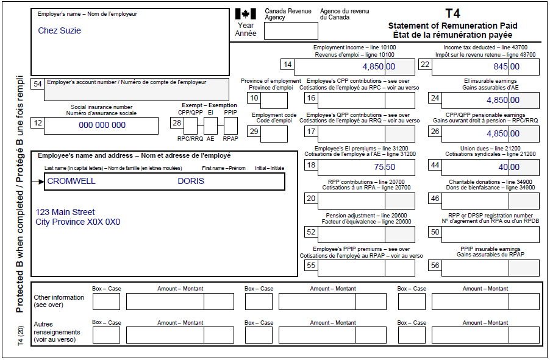
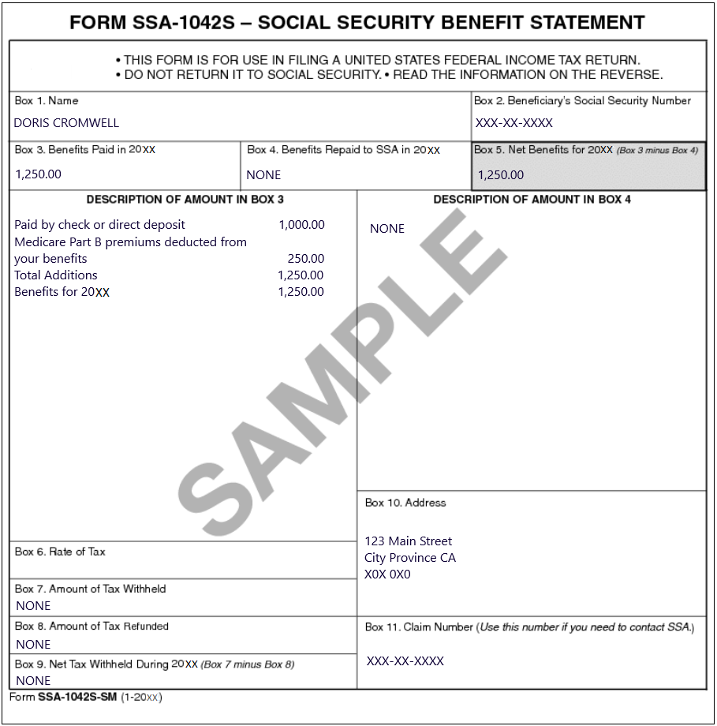
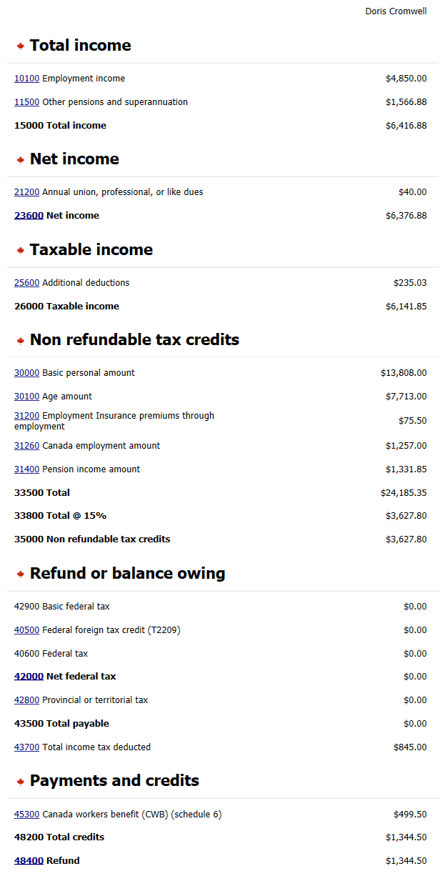

Reporting US social security benefits
Pre-test question
Sorry, that's incorrect
Individuals can claim a deduction equal to 15% of their U.S. Social Security benefits and can increase the deduction to 50% if they meet certain conditions.
That's correct
Individuals can claim a deduction equal to 15% of their U.S. Social Security benefits and can increase the deduction to 50% if they meet certain conditions.
Instructions
- Open the UFile CVITP software
- Review the background information and slips required (tax slips, receipts, etc.)
- Enter all the necessary information into the required sections of UFile
- Once completed, compare your results with the solution provided
- Check out the takeaway points at the end
Background information
Situation
Doris is employed at a bakery (Chez Suzie) and started receiving U.S. Social Security benefits last year. Doris was told by a friend that there is a deduction for individuals receiving U.S. Social Security benefits and wants to claim it.
Identification information
| Name | Doris Cromwell |
|---|---|
| Social insurance number (SIN) | 000 000 000 |
| Address | 123 Main Street City, Province X0X 0X0 |
| Date of birth | June 13, 1950 |
| Marital status | Single |
Slips required
T4 – Statement of Remuneration Paid (Chez Suzie) (for Doris)
Text version
T4 – Statement of Remuneration Paid Protected B Employer’s name: Chez Suzie Employee’s name and address: Last name: Cromwell First name: Doris 123 Main Street City Province X0X 0X0 Box 12: Social insurance number: 000 000 000 Box 14: Employment income – line 10100: 4,850.00 Box 22: Income tax deducted – line 43700: 845.00 Box 24: EI insurable earnings: 4,850.00 Box 26: CPP/QPP pensionable earnings: 4,850.00 Box 18: Employee’s EI premiums – line 31200: 75.50 Box 44: Union dues – line 21200: 40.00SSA-1042S – U.S. Social Security Benefit Statement (foreign pension income)
Text version
Form SSA-1042S – Social Security Benefit Statement – SAMPLE This form is for use in filing a United States federal income tax return. Do not return it to social security. Read the information on the reverse. Box 1: Name: Doris Cromwell Box 2: Beneficiary’s Social Security Number: XXX-XX-XXXX Box 3: Benefits Paid in 20XX: 1,250.00 Box 4: Benefits Repaid to SSA in 20XX: NONE Box 5: Net Benefits for 20XX (Box 3 minus Box 4): 1,250.00 Description of amount in box 3 Paid by check or direct deposit: 1,000.00 Medicare Part B premiums deducted from your benefits: 250.00 Total Additions: 1,250.00 Benefits for 20XX: 1,250.00 Description of amount in box 4: NONE Box 7: Amount of Tax Withheld: NONE Box 8: Amount of Tax Refunded: NONE Box 9: Net Tax Withheld During 20XX (Box 7 minus Box 8): NONE Box 10: Address 123 Main Street City Province CA X0X 0X0 Box 11: Claim Number (Use this number if you need to contact SSA): XXX-XX-XXXXReview your results
Text version
Doris Cromwell Total income 10100 Employment income: $4,850.00 11500 Other pensions and superannuation : $1,566.88 15000 Total income: $6,416.88 Net income 21200 Annual union, professional, or like dues: $40.00 23600 Net income: $6,376.88 Taxable income 25600 Additional deductions: $235.03 26000 Taxable income: $6,141.85 Non refundable tax credits 30000 Basic personal amount: $13,808.00 30100 Age amount: $7,713.00 31200 Employment insurance premiums through employment: $75.50 31260 Canada employment amount: $1,257.00 31400 Pension income amount: $1,331.85 33500 Total: $24,185.35 33800 Total @ 15%: $3,627.80 35000 Non refundable tax credits: $3,627.80 Refund or balance owing 42900 Basic federal tax: $0.00 40500 Federal foreign tax credit (T2209): $0.00 40600 Federal tax: $0.00 42000 Net federal tax: $0.00 42800 Provincial or territorial tax: $0.00 43500 Total payable: $0.00 43700 Total income tax deducted: $845.00 Payments and credits 45300 Canada workers benefit (CWB) (Schedule 6): $499.50 48200 Total credits: $1,344.50 48400 Refund: $1,344.50Takeaway points
Steps to follow
- Review their background information and the required slips
- From the Interview setup, in the Employment and other benefits section, check the box next to Employment income and employment insurance benefits (T4,T4E/RL-6). In the Investment income and expenses section check the box next to Foreign income or foreign property (T1135)
- Select T4 and employment income from the left side menu, add the T4 slip and enter the information. Select Foreign income and property from the left side menu then click the + sign next to Foreign pension income (includes U.S. social security benefits) in the Foreign non-business income section
- For the field Country from where you received the foreign income, select United States (tax treaty with Canada) then enter U.S. Social Security for the Description of the source of the foreign income
- In the field Exchange rate to apply, enter the applicable exchange rate (enter 1 if the amount has already been converted to Canadian dollars) for the year
- For the field Type of foreign pension income, select United states social security benefits (15%)
- In the field Amount of foreign income received, enter the amount that Doris received
Since Doris’s foreign pension started after January 1996, she was not allowed to increase her deduction to 50% for the field Type of foreign pension income. The software will automatically apply the applicable exchange rate to the amount entered in the field Amount of foreign income received and report the amount on line 11500. The deduction will be on line 25600.